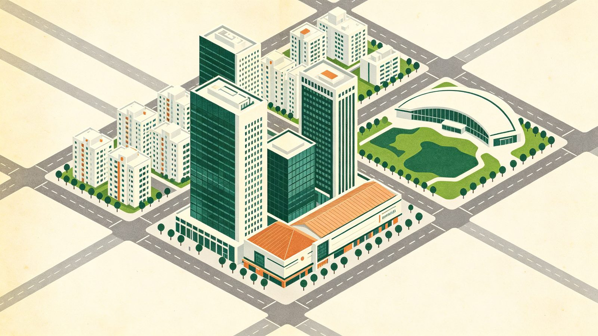

快速瀏覽與篩選
從七期新市政中心到水湳經貿園區，本站把台中市主要重劃區與代表性建案一次收齊。用下方篩選 chips 依行政區、開發方式或標籤快速過濾，點卡片進入該區或該建案的完整解析。
怎麼篩選最快
先想清楚你要找的是「哪一區」還是「哪種房子」：按行政區看範圍，按開發方式區分公辦／自辦市地重劃與區段徵收，按標籤找捷運宅、綠地公園這類生活題材；三個條件可以疊加，也可以隨時清除。
沒有符合篩選條件的重劃區，試試清除篩選。

示意圖（AI 生成，非實景照片）從七期新市政中心到水湳經貿園區，本站把台中市主要重劃區與代表性建案一次收齊。用下方篩選 chips 依行政區、開發方式或標籤快速過濾，點卡片進入該區或該建案的完整解析。
先想清楚你要找的是「哪一區」還是「哪種房子」：按行政區看範圍，按開發方式區分公辦／自辦市地重劃與區段徵收，按標籤找捷運宅、綠地公園這類生活題材；三個條件可以疊加，也可以隨時清除。
沒有符合篩選條件的重劃區，試試清除篩選。
中央是「台中重劃區」，往外接到 9 個行政區、再接到各重劃區與建案總覽；點任一節點可直接前往該頁。